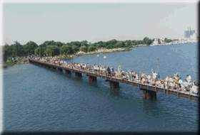
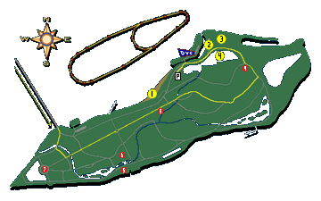

Free viewing is available on the Belle Isle side of the race course for all days of the event! The Belle Isle Map can be found below.
This first photo is of fans enjoying the racing action from a shady riverbank along the Detroit River, and the second photo is of the crowd on the west Belle Isle Pier.
![[Belle Isle Crowd Photo]](bicrwd2.gif)

![[Belle Isle Crowd Photo]](bicrwd1.gif)
Belle Isle is a 5 minute drive East on Jefferson from Downtown Detroit. The General Douglas MacArthur (Belle Isle) Bridge is at Jefferson & Grand Boulevard.

This viewing area is FREE for all days of the event. This area extends from the Belle Isle Pier (in white) to about where the parking symbol is shown.
 The Belle Isle pit area.
Note that the hot pit area here is not open to the public.
The Belle Isle pit area.
Note that the hot pit area here is not open to the public.
 The R/V parking area.
For more info, see R/V parking.
The R/V parking area.
For more info, see R/V parking.
This is 'Lake Muskoday' where the radio-controlled hydroplanes race for the Mini Gold Cup in mid-May.
 Limited parking is available on the
streets of Belle Isle, and this is the overflow parking area. There is a nominal on-site fee for
this area.
Limited parking is available on the
streets of Belle Isle, and this is the overflow parking area. There is a nominal on-site fee for
this area.
 This small
island is the Detroit Yacht Club. Note that this is a private area open only to
DYC members.
This small
island is the Detroit Yacht Club. Note that this is a private area open only to
DYC members.
Click on the map for a larger version, along with details about some of the wonderful landmarks on Belle Isle.
 Return to the Ticket Info page.
Return to the Ticket Info page.
All contents Copyright © 1997 Spirit of Detroit THUNDERFEST, except where noted.
Web page created by Brian Reed.
 Return to the Top THUNDERFEST page.
Return to the Top THUNDERFEST page.
All Rights Reserved.